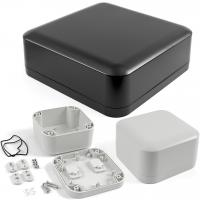

Project template containing the recommended board layout for Hammond Manufacturing 1557F:
Gray: 1557FGY - 164-1557FGY-ND
Black: 1557FBK - 164-1557FBK-ND
Gray: 1557FAGY - 164-1557FAGY-ND
Black: 1557FABK - 164-1557FABK-ND
|  |
|
The "Dwgs.User" layer contains all critical dimmensions in milimeters[inches].
The "Edge.Cuts" layer contains the maximum board outline and holes to align with board standoffs.
PCB Preview: